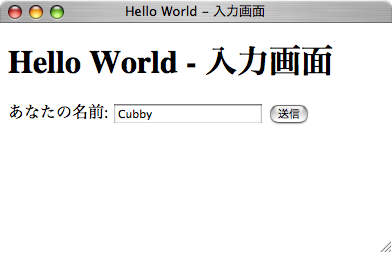
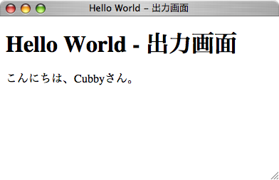

入力画面で入力値を受け取り、結果画面で値を表示するアプリケーションです。 このチュートリアルはCubby のサンプル war の「Hello World」から実行できます。
入力画面
結果画面
アクションクラスは「org.seasar.cubby.action.Action」クラスを継承して作成します。 ここでは HelloAction クラスを作成します。 このクラスには２つのアクションメソッド(index, message)があります。 index は入力画面「input.jsp」の表示用、message は入力画面から名前を受け取り結果画面「result.jsp」を表示するためのアクションメソッドです。 １アクションメソッドは１リクエスト(URL)に対応します。 URL は特に指定がない場合「アクションクラス名から Action を取って小文字にしたもの + メソッド名」となります。
| メソッド | URL | 説明 |
| HelloAction#index | /hello | "/" + "hello" + "/" + "" メソッド名indexだけは特別な意味で「URLなし」という意味になります。 |
| HelloAction#message | /hello/message | "/" + "hello" + "/" + "message" |
アクションメソッドの戻り値は「ActionResult」です。
ここでは、フォワードしてJSPを表示するために、new Forward("input.jsp")となります。
これにより、「/hello/input.jsp」にフォワードします。
@Formアノテーションをアクションメソッドに指定することで、リクエストパラメータと Bean の自動バインディングが行われます。
この場合、リクエストパラメータ「name」が HelloAction のプロパティ「name」にバインディングされます。
HelloAction.java
package org.seasar.cubby.examples.hello;
import org.seasar.cubby.action.Action;
import org.seasar.cubby.action.ActionResult;
import org.seasar.cubby.action.Form;
import org.seasar.cubby.action.Forward;
public class HelloAction extends Action {
public String name;
public ActionResult index() {
return new Forward("input.jsp");
}
@Form
public ActionResult message() {
return new Forward("result.jsp");
}
}入力画面用の「input.jsp」とメッセージ出力画面用の「result.jsp」を作成します。
input.jsp では、Cubby のカスタムタグを使って、フォームを作成します。
「<form ... value="${action}">」では、フォームにバインディングするオブジェクトを指定しています。 ${action}はフォワード時に使用したアクションそのものを意味します。アクション自体がフォームのバインディング対象の場合はvalue属性は省略可能です。 (つまり、この例では value 属性を書く必要はありません。)
入力フィールドはカスタムタグを使用して出力します。 （<t:input type="text" name="name"/>）
/hello/input.jsp
<!DOCTYPE html PUBLIC "-//W3C//DTD XHTML 1.0 Transitional//EN" "http://www.w3.org/TR/xhtml1/DTD/xhtml1-transitional.dtd">
<html xmlns="http://www.w3.org/1999/xhtml" lang="ja" xml:lang="ja">
<head>
<meta http-equiv="Content-Type" content="text/html; charset=utf-8" />
<title>Hello World - 入力画面</title>
</head>
<body>
<h1>Hello World - 入力画面</h1>
<t:form action="message" value="${action}">
あなたの名前:
<t:input type="text" name="name"/>
<input type="submit" value="送信"/>
</t:form>
</body>
</html>/hello/result.jsp
<!DOCTYPE html PUBLIC "-//W3C//DTD XHTML 1.0 Transitional//EN" "http://www.w3.org/TR/xhtml1/DTD/xhtml1-transitional.dtd">
<html xmlns="http://www.w3.org/1999/xhtml" lang="ja" xml:lang="ja">
<head>
<meta http-equiv="Content-Type" content="text/html; charset=utf-8" />
<title>Hello World - 出力画面</title>
</head>
<body>
<h1>Hello World - 出力画面</h1>
こんにちは、${action.name}さん。
</body>
</html>ブラウザでhttp://localhost:8080/cubby-examples/hello/にアクセスします。
JSP のページディレクティブや taglib ディレクティブは、各 JSP には記述せずにヘッダーファイルをインクルードして設定することを推奨します。
Servlet 2.4/JSP 2.0 の web.xml の設定として「include-prelude」ディレクティブが用意されていますので、これを使用してヘッダーファイルのインクルードを行います。
ヘッダーファイル(header.jsp)では、ページ共通の taglib ディレクティブを記述しておきます。
上記サンプルの JSP は、共通ヘッダーを使用しているので、JSP の先頭に taglib ディレクティブの宣言がありません。
実際は、以下の「header.jsp」の内容が JSP の先頭に自動的に付加されてから、コンパイル・実行されています。
/common/header.jsp
<%@ page contentType="text/html;charset=UTF-8" pageEncoding="UTF-8" %> <%@ taglib prefix="c" uri="http://java.sun.com/jsp/jstl/core" %> <%@ taglib prefix="fmt" uri="http://java.sun.com/jsp/jstl/fmt" %> <%@ taglib prefix="fn" uri="http://java.sun.com/jsp/jstl/functions" %> <%@ taglib uri="http://www.seasar.org/cubby/tags" prefix="t" %> <%@ taglib uri="http://www.seasar.org/cubby/functions" prefix="f" %>
web.xml
</web-app>
...
<jsp-config>
<jsp-property-group>
<url-pattern>*.jsp</url-pattern>
<el-ignored>false</el-ignored>
<page-encoding>UTF-8</page-encoding>
<scripting-invalid>false</scripting-invalid>
<include-prelude>/common/header.jsp</include-prelude>
</jsp-property-group>
</jsp-config>
</web-app>